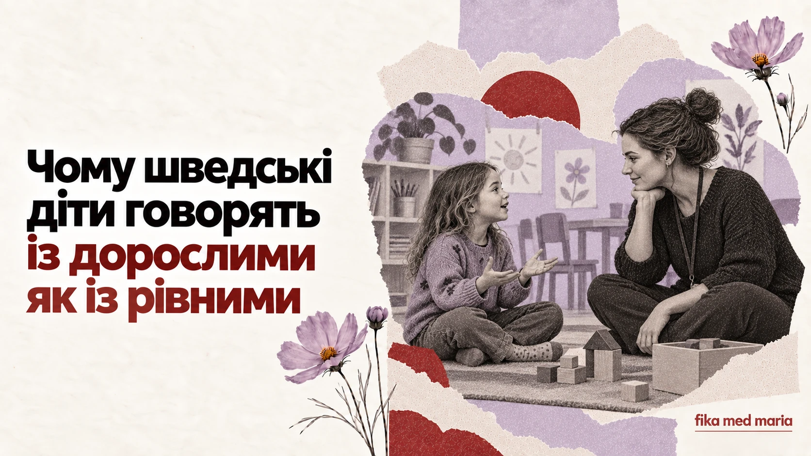

Чому шведські діти розмовляють із дорослими як із рівними

Дитина називає виховательку на ім'я. Сперечається з дорослим. Запитує, чому повинна щось робити. На перший погляд це може виглядати як відсутність дистанції або навіть поваги.
Але у шведському контексті рівний тон не означає однакову відповідальність. Дорослий залишається дорослим — просто авторитет не обов'язково демонструється формальним звертанням і наказами.
Du не скасовує межі
Шведські діти звертаються до вихователів, учителів та більшості інших дорослих на du й часто називають їх на ім'я. Відсутність окремого «Ви» створює меншу мовну дистанцію, але не стирає ролі.
Учитель може говорити тепло й однаково чітко встановлювати межу:
Jag hör att du är arg, men du får inte slå.
Я чую, що ти злишся, але бити не можна.
У реченні одночасно є визнання емоції та правило. Розуміти почуття не означає дозволяти будь-яку поведінку.
Дитині пояснюють «чому»
Замість короткого «бо я так сказала» дитина часто чує пояснення наслідку:
Vi behöver gå nu för att hinna till förskolan i tid.
Нам потрібно виходити зараз, щоб вчасно прийти до садочка.
Du behöver ha hjälm för att skydda huvudet.
Тобі потрібен шолом, щоб захистити голову.
Пояснення не означає, що кожне правило виноситься на голосування. Воно допомагає дитині побачити логіку, а не лише владу дорослого.
Вибір у визначених межах
Дитині можуть запропонувати вибір, але дорослий визначає його рамки:
Vill du ta på dig den röda eller den blå tröjan?
Ти хочеш одягнути червоний чи синій светр?
Вибору «не одягатися взагалі» тут немає. Це не відмова від керівництва, а спосіб дати дитині вплив там, де він безпечний.
Не «ти поганий», а «так робити не можна»
У розмові важливо відокремлювати людину від вчинку:
Det var inte okej att ta leksaken från henne.
Забирати в неї іграшку було неправильно.
Це відрізняється від оцінки Du är dum — «Ти поганий/дурний». Перша фраза називає поведінку, яку можна змінити. Друга створює ярлик для самої дитини.
Дитяче nej теж потрібно почути
Якщо дитина говорить nej, дорослий може з'ясувати причину:
Jag hör att du inte vill. Kan du berätta varför?
Я чую, що ти не хочеш. Можеш розповісти чому?
Це не обіцянка погодитися. Після відповіді дорослий може сказати:
Jag förstår, men vi behöver ändå gå till läkaren.
Я розумію, але нам усе одно потрібно піти до лікаря.
Дитина отримує право на почуття й голос, але не відповідальність за рішення, яке перевищує її вік.
Фрази, які батьки можуть почути в садочку
Hur har lämningen fungerat?
Як проходило прощання вранці?
Han har varit delaktig i leken.
Він брав активну участь у грі.
Hon behöver stöd i övergångarna.
Їй потрібна підтримка під час переходів між заняттями.
Vi vill gärna följa upp det här.
Ми хотіли б повернутися до цього питання й простежити, як розвивається ситуація.
Остання фраза не обов'язково означає серйозну проблему. Але це сигнал, що працівники хочуть продовжити спостереження або розмову.
Як поставити запитання, якщо ви не згодні
Замість мовчати або одразу захищатися можна сказати:
- Kan du ge ett konkret exempel? — Можете навести конкретний приклад?
- Hur brukar ni hantera sådana situationer? — Як ви зазвичай дієте в таких ситуаціях?
- Vad kan vi göra hemma? — Що ми можемо робити вдома?
- När följer vi upp det här? — Коли ми повернемося до цього питання?
Так розмова стає спільним пошуком рішення.
Дитина не хоче завершувати гру, але потрібно виходити. Сформулюйте фразу з трьох частин: визнати почуття, встановити межу, дати маленький вибір.
Наприклад:
Jag förstår att du vill leka mer, men vi behöver gå nu. Vill du ta med bilen eller nallen?
Fika med Maria готує практичні матеріали для спілкування із садочком, школою, медичними працівниками та іншими батьками. Шпаргалка для мам.
Чи шведським дітям дозволяють усе?
Ні. Ідея участі дитини не означає відсутності правил. Межі часто формулюють спокійно й пояснюють їхню причину.
Що означає delaktig?
Залучений, той, хто бере участь і має можливість впливати відповідно до ситуації.